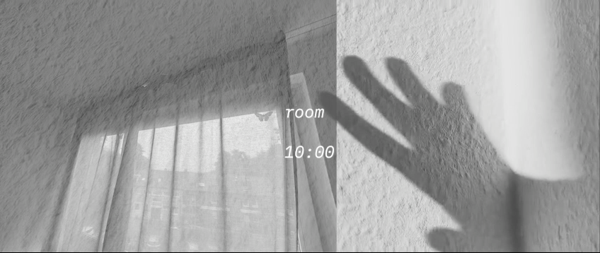
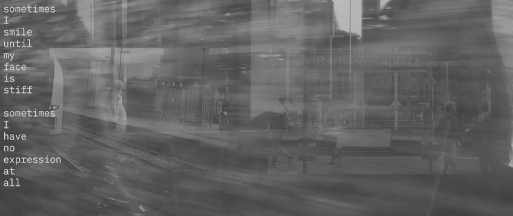
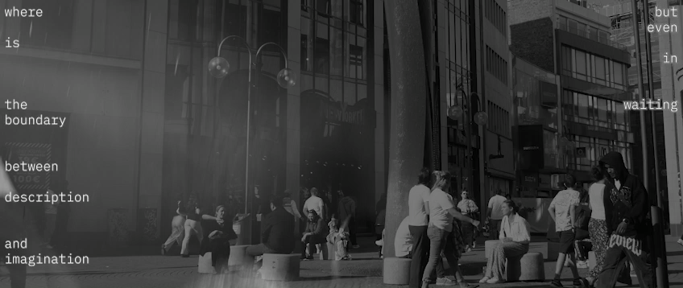
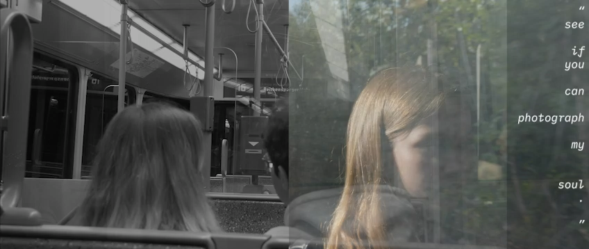
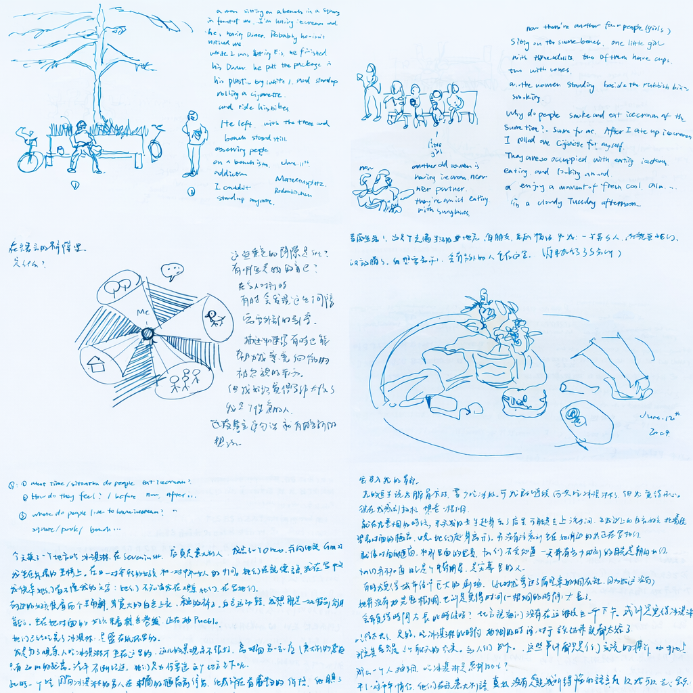
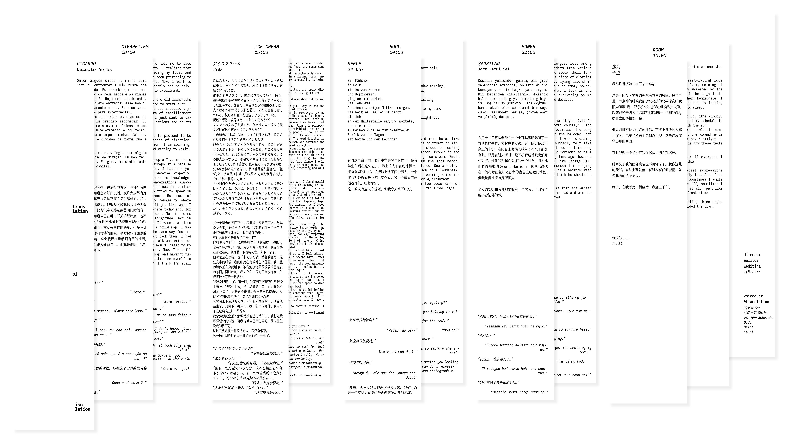

Translation of Isolation is an experimental moving-image work that explores isolation, perception, and the gaps between people, language, and urban experience. Inspired by the relationship between poetry and montage—the film treats fragments of daily life as poetic units, assembling image, text, and voice into a stream-of-consciousness structure.
Developed through observations of public spaces and the experience of living in Germany as a non-native speaker, the work reflects on how distance is produced not only physically, but also through language, silence, and failed dialogue. By combining monologues and dialogues across different languages, the film evokes the fractured yet fluid states of consciousness that surface in the act of communication. Through ordinary footage, multilingual voices, and associative editing, it constructs a sensory narrative of estrangement, suggesting that meaning emerges in the intervals: between words, between images, and between one person and another.





Notes in Public Space Inspired by poetry and cinematic montage, these notes record how observing urban life led me to think about perception, dialogue, and the unstable flow of consciousness—ideas that later shaped Translation of Isolation.

Script: Chinese/English/Japanese/Portugese/Turkish/German